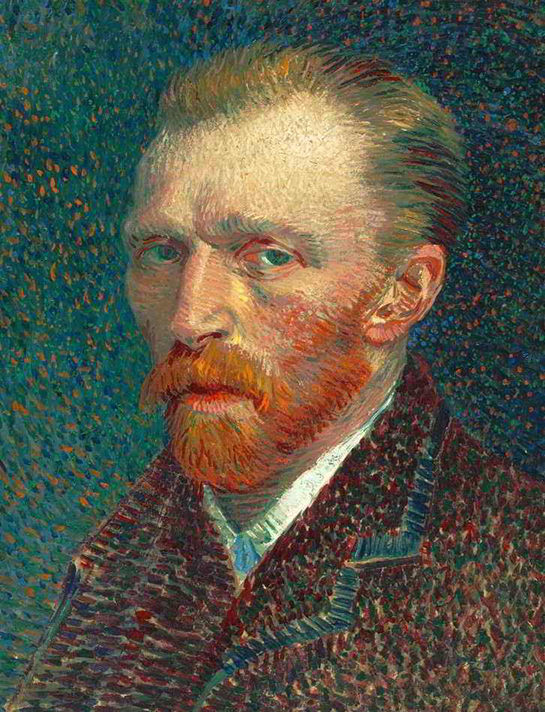
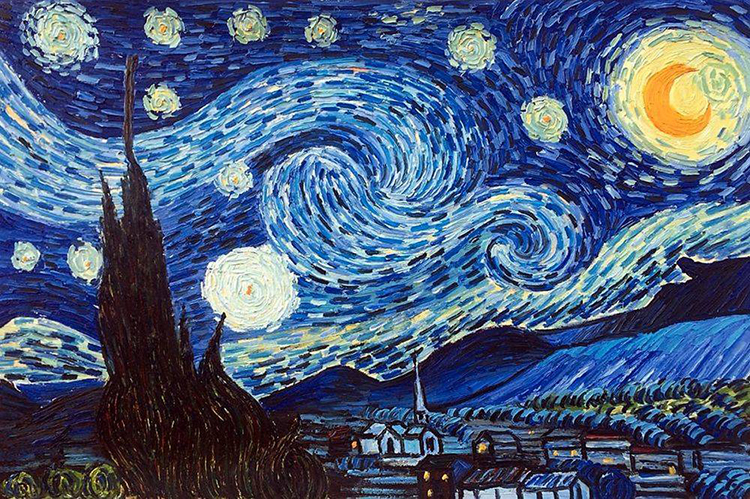

About Vincent
Vincent Willem van Gogh (30 March 1853 – 29 July 1890) was a Dutch Post-Impressionist painter who is among the most famous and influential figures in the history of Western art. In just over a decade he created about 2,100 artworks, including around 860 oil paintings, most of them in the last two years of his life. They include landscapes, still lifes, portraits and self-portraits, and are characterised by bold colours and dramatic, impulsive and expressive brushwork that contributed to the foundations of modern art. His suicide at 37 followed years of mental illness and poverty.
Early Years
Vincent Willem van Gogh was born on 30 March 1853 into a Dutch Reformed family in Groot-Zundert, in the predominantly Catholic province of North Brabant in the southern Netherlands. He was the oldest surviving child of Theodorus van Gogh, a minister of the Dutch Reformed Church, and Anna Cornelia Carbentus. Van Gogh was given the name of his grandfather, and of a brother stillborn exactly a year before his birth. Vincent was a common name in the Van Gogh family: his grandfather, Vincent (1789–1874), who received a degree in theology at the University of Leiden in 1811, had six sons, three of whom became art dealers. This Vincent may have been named after his own great-uncle, a sculptor (1729–1802).
Van Gogh's mother came from a prosperous family in The Hague,and his father was the youngest son of a minister. The two met when Anna's younger sister, Cornelia, married Theodorus's older brother Vincent (Cent). Van Gogh's parents married in May 1851 and moved to Zundert. His brother Theo was born on 1 May 1857. There was another brother, Cor, and three sisters: Elisabeth, Anna, and Willemina (known as "Wil"). In later life Van Gogh remained in touch only with Willemina and Theo. Van Gogh's mother was a rigid and religious woman who emphasised the importance of family to the point of claustrophobia for those around her. Theodorus's salary was modest, but the Church supplied the family with a house, a maid, two cooks, a gardener, a carriage and horse, and Anna instilled in the children a duty to uphold the family's high social position. Black-and-white formal head shot photo of the artist as a boy in jacket and tie. He has thick curly hair and very pale-coloured eyes with a wary, uneasy expression.
Van Gogh was a serious and thoughtful child. He was taught at home by his mother and a governess, and in 1860 was sent to the village school. In 1864 he was placed in a boarding school at Zevenbergen, where he felt abandoned, and campaigned to come home. Instead, in 1866 his parents sent him to the middle school in Tilburg, where he was deeply unhappy. His interest in art began at a young age. He was encouraged to draw as a child by his mother, and his early drawings are expressive, but do not approach the intensity of his later work. Constant Cornelis Huijsmans, who had been a successful artist in Paris, taught the students at Tilburg. His philosophy was to reject technique in favour of capturing the impressions of things, particularly nature or common objects. Van Gogh's profound unhappiness seems to have overshadowed the lessons, which had little effect; in March 1868 he abruptly returned home. He later wrote that his youth was "austere and cold, and sterile".

Artistic development.
Van Gogh drew, and painted with watercolours while at school, but only a few examples survive and the authorship of some has been challenged.[199] When he took up art as an adult, he began at an elementary level. In early 1882, his uncle, Cornelis Marinus, owner of a well-known gallery of contemporary art in Amsterdam, asked for drawings of The Hague. Van Gogh's work did not live up to expectations. Marinus offered a second commission, specifying the subject matter in detail, but was again disappointed with the result. Van Gogh persevered; he experimented with lighting in his studio using variable shutters, and with different drawing materials. For more than a year he worked on single figures – highly elaborate studies in black and white,[note 11] which at the time gained him only criticism. Later, they were recognised as early masterpieces.